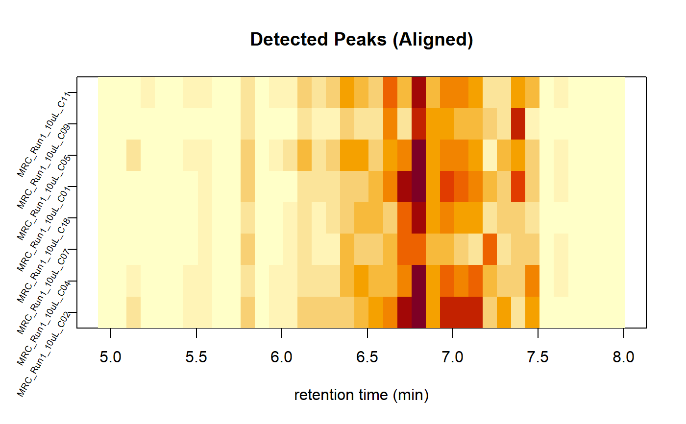

lmcs_plot_chrom_peak_image.RdIt plots the an image of the chromatographic peaks for each sample. This function is useful if you are interested in knowing the effect of the retention time correction on the chromatographic axis.
lmcs_plot_chrom_peak_image(x, binSize = 30, xlim = NULL, log = FALSE, xlab = "retention time", yaxt = graphics::par("yaxt"), main = "Chromatographic peak counts", ...)
| x | A lcms_dataset. |
|---|---|
| binSize | Bin size for the the reteincion time axis. |
| xlim | Retention time axis range. If Null, it uses the complete retention time range. |
| log | If TRUE, it performs a logarithmic transformation on the data. |
| xlab | Label for the retention time axis. |
| yaxt | Options for the y axis. Use the default value. |
| main | Plot title. |
| ... | Additional parameters for image function. |
An image with the detected chromatographic peak, for each sample.
Other dataset functions: lcms_align_rtime,
lcms_dataset_load,
lcms_dataset_save,
lcms_fill_chrom_peaks,
lcms_filter_mz,
lcms_filter_polarity,
lcms_filter_rt_min,
lcms_filter_sample_type,
lcms_find_chrom_peaks_cwp,
lcms_group_peaks,
lcms_meta_add,
lcms_meta_export,
lcms_peakpicking_optimization,
lcms_plot_tics,
lcms_rearrange_datafiles_by_class,
lcms_retention_time_alignment_plot,
lcms_tics, phData
Other chromatogram functions: lcms_plot_chrom,
lcms_plot_tics
Other visualization functions: lcms_peak_table_boxplots,
lcms_peak_table_pca,
lcms_peakpicking_optimization,
lcms_plot_chrom,
lcms_plot_tics,
lcms_retcorgroup_optimization,
lcms_retention_time_alignment_plot
file_name <- system.file("extdata", "peakdet_align.rds", package = "NIHSlcms") dataset <- base::readRDS(file_name) chr_peak_image <- lmcs_plot_chrom_peak_image(dataset, binSize = 5, xlim = NULL, log = FALSE, xlab = "retention time (min)", yaxt = par("yaxt"))